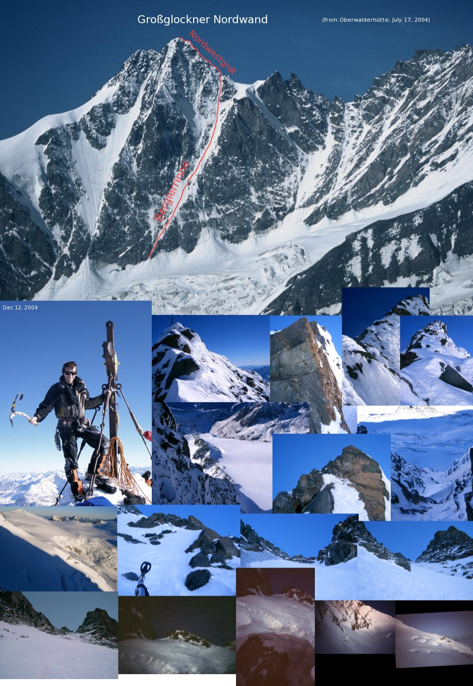
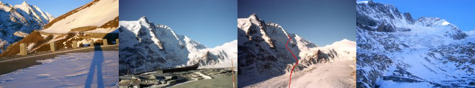
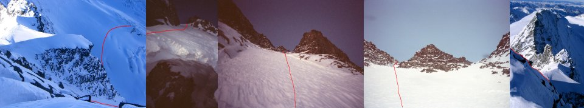
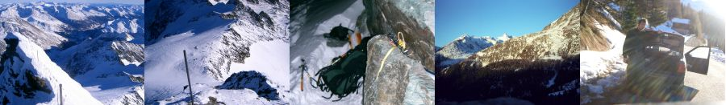
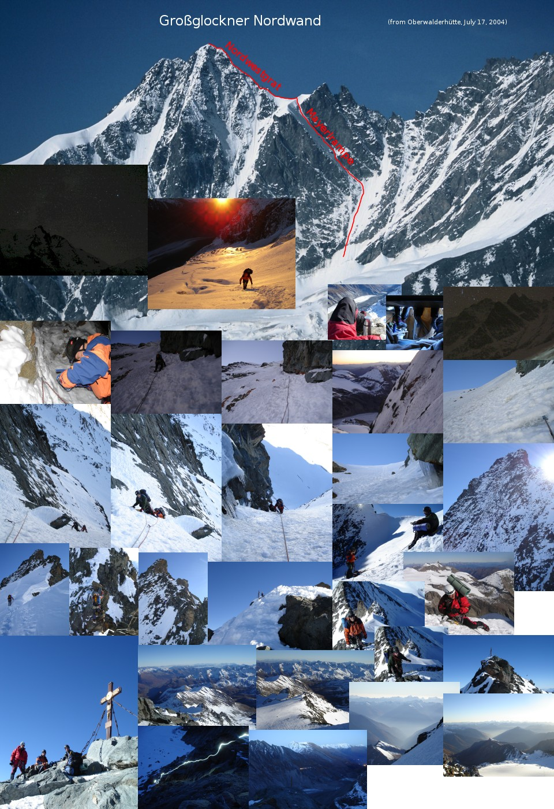

2004. december 12.
Berglerrinne és az északnyugati gerinc.

1. nap. Fel a Glocknerbiwakba (N47°04.95' E12°41.65',
3250m). 11km gyaloglás a Hochalpenstrasse-n az
útlezárástól a Franz Josefs Höhe-ig.
Aztán 5km, le a Pasterze-re (2070m) és fel 3250m-re.

2. nap (dec.12.). Indulás reggel 6-kor, kb. fél óra a
kuloár alja (N47°04.622' E12°41.832', 3179m).
7:00-11:00: 650m hó- és jégmászás a
gerincig (N47°04.510' E12°41.562', 3699m), az
átlag meredekség 52.4°. 11:15-13:00: 150m III-as
szikla (többnyire hóval fedett) a csúcsig
(N47°04.468' E12°41.633', 3798m).

Le a hegyrõl. Négy óra alvás 2700m-en,
aztán tovább lefele a Hoffmannsweg-en (nem könnyű
megtalálni a hóval fedett jelzéseket a
sötétben). Az autót másnap reggel értem el.

2005. október 31.
Mayerlrampe és északnyugati gerinc Tóth Ervinnel
és Kment Ferivel.

Október 30. hajnalban a Franz Josefs Höhétõl a
Glocknerbiwakba (3250m). Október 31. hajnal 1:00 kelés,
2:15 indulás, 3:15 beszállás, kb.
5:45-11 rámpa (kb. 300m 60-70°), 11:30-14:00
északnyugati gerincen (150m III) a csúcsig (3798m). Le a
Hoffmannswegen, az autóhoz este 9-re értünk vissza.
Index